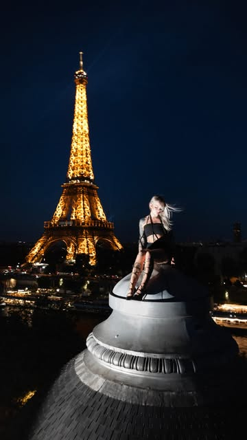
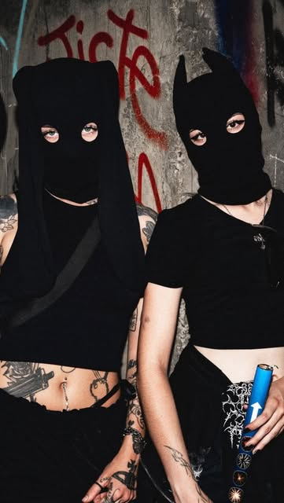

Casper is the most recognisable creator nobody can recognise.
A balaclava, a skyline, and 162,000 people watching. Casper (@caspertheghos7) has built an urbex following across Toronto, New York and Paris without ever showing a face — proof that a persona can carry an audience as hard as a personality.
Follower count read from @caspertheghos7's public Instagram profile on August 1, 2026. "Cities on the record" means cities DGTL could confirm from Casper's own posted media — Toronto, New York and Paris. DGTL has not independently verified engagement rates, reach figures, or any commercial partnership; where a brand appears below it is because Casper posted it, not because a deal was disclosed to us.
Casper (@caspertheghos7) has 162,000 Instagram followers and, as far as the internet is concerned, no face. The Toronto creator works in a balaclava — sometimes black, sometimes a white knit with a single eye-slit — and photographs herself on the edges of buildings most people will never stand on top of, let alone sit down and dangle their legs over.
It is a deliberate trade. Most creator growth runs on familiarity: the same face, the same room, over and over until an audience feels like it knows you. Casper removed the face from the equation entirely and replaced it with a silhouette — mask, tattoos, a skyline drop behind her — that is just as instantly identifiable in a feed. The persona does the work the personality usually does.
Toronto first, then the skylines everyone knows
The home base is Toronto; her own posts are tagged for it, and the CN Tower and the Rogers Centre dome turn up under her feet more than any other landmark. But the run of work DGTL reviewed for this profile also puts her on a Midtown Manhattan ledge with the Chrysler Building filling the frame, on a rooftop dome across from a lit Eiffel Tower at night, down in the ossuary tunnels of the Paris catacombs, and — in the strangest and best of them — kneeling on the nacelle of a wind turbine in fog thick enough to erase the horizon.
A persona can carry an audience as hard as a personality — if the persona is unmistakable.
— The DGTL Influence view on CasperWhat the mask is actually worth
The anonymity is not only an aesthetic; it is an asset with unusual properties. A masked creator is portable — the character survives a wardrobe change, a co-star, a city, even a second performer, and the audience still knows exactly who they are looking at. Casper leans into that: the mask itself is the merch logic, her store runs on the code GHOST20, and she wears pieces from MXDVS, the Antwerp atelier whose whole catalogue is knitted balaclavas. She is also a working tattoo artist in Toronto under a second account, @casperthefriendlytattooer — which explains the ink that reads, at feed scale, as part of the costume.
- A visual signature that survives anything — no face means no wardrobe, age, or location continuity to protect.
- A category with almost no competition at this level of craft: urbex shot like fashion, not like GoPro footage.
- Built-in product logic — the mask is the merchandise, and the merchandise is the marketing.
- Cross-border documented work: Toronto, New York and Paris from one creator.
The obvious caveat belongs in plain sight rather than a footnote: this is rooftopping, and rooftopping is trespass in most of the places it happens and fatal in some of them. DGTL is profiling the work and the audience-building behind it, not recommending the method, and nothing here should be read as a how-to. Any brand looking at a creator in this category is looking at a real duty-of-care question before it is looking at a media buy — which is exactly why the ones who handle it well are worth knowing by name.
The work

Paris
SignatureA network people actually trust.
80+ vetted creators, matched to your brand — not bolted on. Let's scope an activation that moves real numbers.